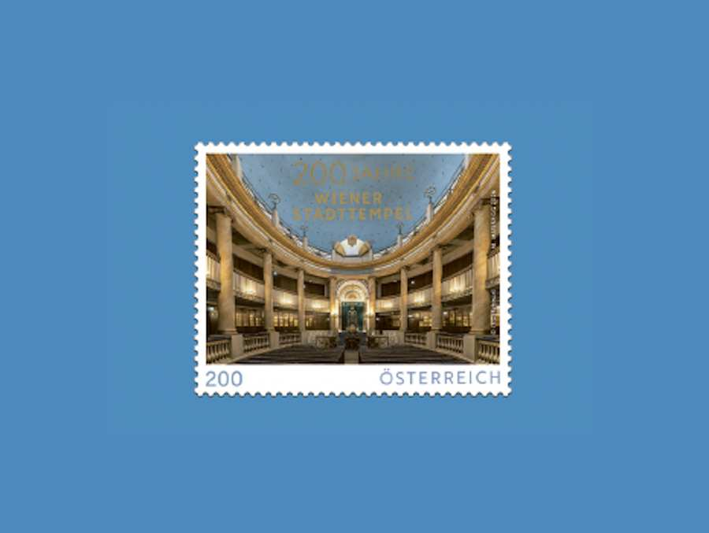
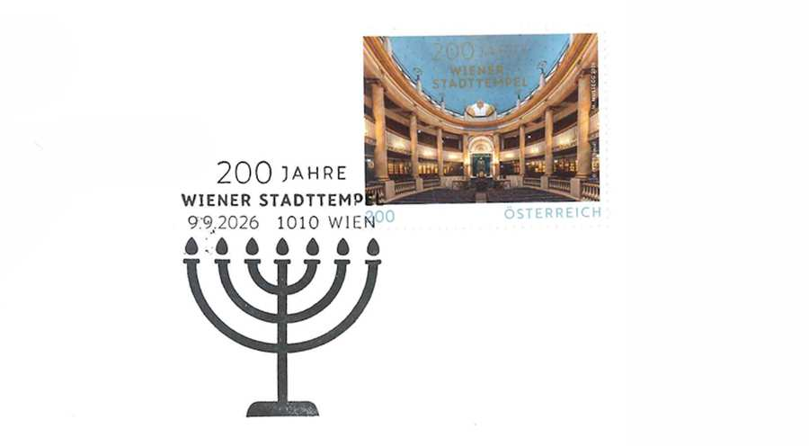

Информация о событии
Время: 9 сентября 2026 г., 9:00 – 12:00.
Местоположение: Алеф АлефДобавить в календарь

9 сентября 2026 года марка будет впервые выпущена в Алеф-Алеф с 9:00 до 12:00. по случаю 200-летия Венской городской синагоги.
Для этого особого случая будет работать специальное почтовое отделение, где можно будет приобрести марку на месте, поставить на нее штамп специального гашения первого дня и отправить по почте.
Приходите и приобретите этот особенный сувенир к юбилею Венской городской синагоги!

Текущие события

Премьера фильма в Австрии: Гордый еврейский мальчик / Na'ar Jehudi Ge'eh